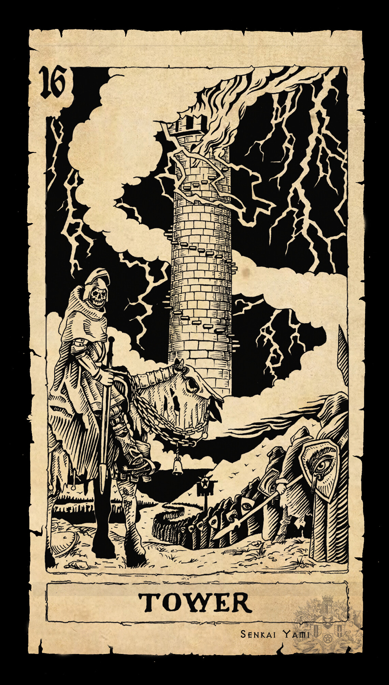

The Griffin and tHE Tower

A hybrid of a lion and an eagle, the griffin was a powerful, majestic creature of ancient Egyptian and Persian mythology. Traditionally, griffins were depicted with the body, tail, and hind legs of a lion in addition to the head, wings, and talons of an eagle. However, sometimes, the art of griffins featured the creatures with lions front paws as well. In legend, griffins were guardians over great treasure and riches.
The Tower card depicts a high spire nestled on top of the mountain. A lightning bolt strikes the tower which sets it ablaze. Flames are bursting in the windows and people are jumping out of the windows as an act of desperation. They perhaps signal the same figures we see chained in the Devil card earlier. They want to escape the turmoil and destruction within. The Tower is a symbol for the ambition that is constructed on faulty premises. The destruction of the tower must happen in order to clear out the old ways and welcome something new. Its revelations can come in a flash of truth or inspiration.